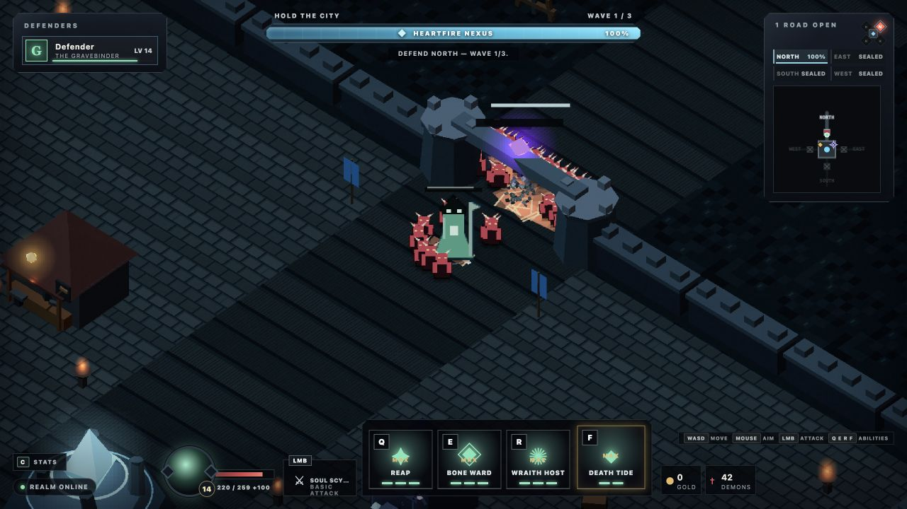

Hold the city
The Heartfire Nexus is always the objective. Gates may fall; the run ends only when the city loses its heart.
SIEGEHEART DEVELOPMENT COMPANION
A 1–4 player dark-fantasy action RPG about defending the Heartfire Nexus, surviving the breach, and carrying the fight back through the invasion rift.
Playable game hosting remains pending a configured Bun/WebSocket host.
LATEST VERIFIED CHECKPOINT · 0.1.29
Darkness now frames a readable battlefield instead of swallowing the world, the champions, and the decisions that keep the Nexus alive.
FROM 0.1.28 Trust the Shot, Read the Wall, exact champion consequences, physical local shops, four wares, six unrestricted run-only sockets, authoritative Attunement, Combat Stride, truthful reforges, bounded reconnection, established effects, controls, art, and audio remain intact.

The Heartfire Nexus is always the objective. Gates may fall; the run ends only when the city loses its heart.
Warden, Riftstalker, Ashcaller, and Gravebinder share one control grammar while changing how every horde is solved.
Survive the breach, stabilize the Nexus, then push together through the north road and destroy the Rift Heart.